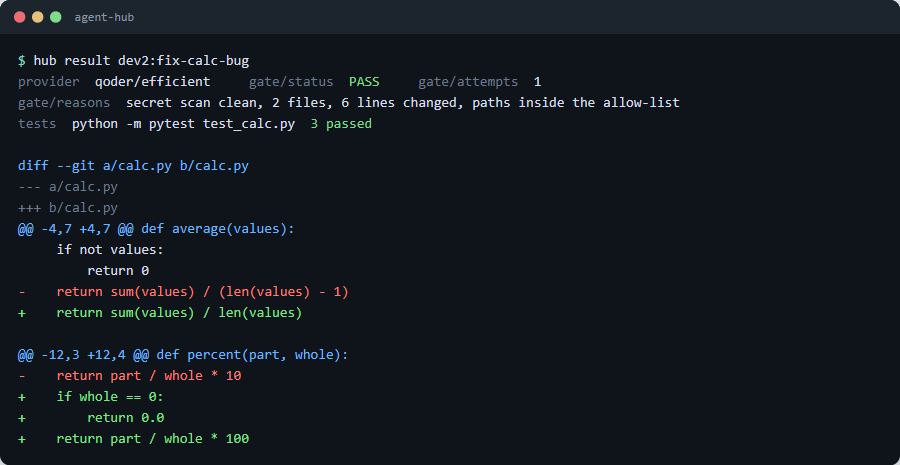
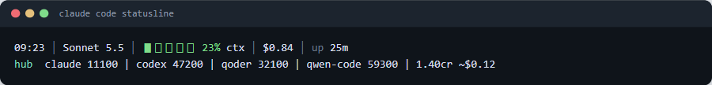
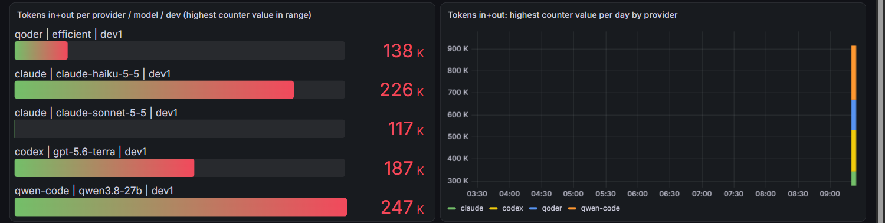
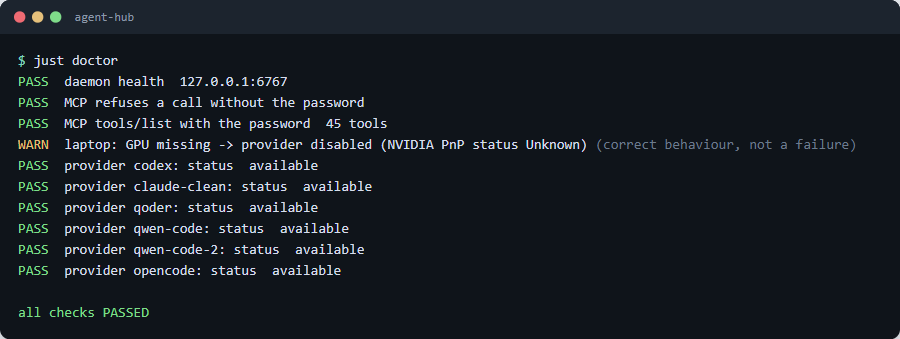

Agent Hub, under the hood
Agent Hub lets any AI client hand a task to any agent provider and get a verdict plus a diff back. It is configuration and plugins on top of the Paseo agent daemon, with no change to Paseo's own code. This guide is read from the code and config in the repository: what runs, in what order, and why.
Follow one taskSource on GitHub/mcp/agents, or the paseo CLI. Five clients tested as callers.1What it is and why
The problem it replaces
Before this, delegating work to a cheaper model meant a Claude session sat in the middle of every task. It read the task, called a home-built router, waited, read the result and judged it. That cost lead tokens on every delegated task, and it tied delegation to one client. The router itself was home-built too: a gateway with slots, a circuit breaker, budgets and a ledger. Usage was scattered over several tools, so nobody could see tokens per model in one place.
The goals (from the spec)
- Any client, any provider. Claude Code, Codex, Qoder, OpenCode and Qwen Code can all be the caller. Codex, Claude, Qoder, Qwen Code, OpenCode, an office SGLang server and a laptop llama.cpp server can all be the worker. Nothing in the glue is specific to one client.
- No lead in the middle. The caller dispatches straight to a provider. Zero Claude-lead tokens on the path.
- Verdict and diff back. A gate checks the result on the daemon side, so it applies whoever sent the task.
- One usage view. Tokens per model, provider, developer and day, plus credits where a provider bills in credits.
- Laptop model 100% on the GPU. A Qwen3.5-9B model plus a 32k KV cache has to fit in 8 GB of VRAM, with no CPU or RAM offload.
- Adopt, do not invent. v1 is a thin layer on Paseo: plugins, config and scripts. The Paseo trademark is not used, hence the name
agent-hub. - Safe by default. Loopback bind, a password, full-access modes only inside a throwaway worktree, a secret scan on every result.
| Old pool | Agent Hub |
|---|---|
| A Claude lead reads, routes and judges every task | The caller talks to the daemon directly; the gate plugin judges |
| Home-built router, slots, breaker, budgets | A routing table (route.mjs), a slot cap per provider, next-entry fallback |
| Edits happen in the caller's folder | One throwaway git worktree per task |
| Usage in separate ledgers | One record per turn, OTLP to Prometheus and Grafana, a per-session file for the statusline |
2Architecture
The daemon is the only long-lived process. Everything else is a file it reads, a plugin it loads, or a CLI it launches. Dashed arrows are optional or asynchronous paths.
The pieces and where they live
| Piece | Where | Job |
|---|---|---|
| Paseo daemon | installed by npm i -g @getpaseo/cli@0.15.0 | Runs agents, makes worktrees, hosts plugins, serves MCP and the web UI |
| Config writer | scripts/hub.mjs | configure, mcp add|remove, plugins, doctor, unconfigure |
| Routing wrapper | plugins/routing/route.mjs | Task type to ordered provider chain, slot check, fallback, gate request |
| Gate plugin | plugins/gate/ | Hook on agent.turn.after; checks the diff, re-prompts once |
| Usage plugin | plugins/usage-otel/ | Hook on agent.turn.before/after; records and exports usage |
| Laptop launcher | deploy/laptop/ | Pre-flight, lazy llama-server start, runtime GPU watchdog |
| Service wrappers | deploy/service/ | Task Scheduler (Windows) or systemd user unit (Linux) |
| Usage stack | deploy/usage/ | Collector, Prometheus, Grafana, host pollers |
| Shared server | deploy/shared/ | One container per developer behind a login proxy |
The two doors
MCP door. The daemon exposes POST /mcp/agents. doctor proves it refuses a call with no password (401) and answers tools/list with the bearer secret (more than 10 tools; a manual count in the lab found 40). The installer registers an agent-hub entry in each installed client's own config, in that client's own shape: type: http for Claude Code, httpUrl for Qwen Code, type: remote for OpenCode, a marked TOML block for Codex. The files are written directly so the secret never appears in a process argument list, and the original is backed up once to <file>.agent-hub.bak.
CLI door. paseo run, paseo wait, paseo logs --json. Any shell-capable client can use it with no MCP setup. route.mjs is built on this door.
agent.create.before hook has no labels and cannot spawn a replacement agent, so the routing table lives in route.mjs. A client that calls MCP create_agent directly picks its own provider. The gate and usage plugins still fire for that agent, because they sit on the turn hooks, not on the router.3Life of a task, step by step
This is the path of one task through route.mjs. Solid arrows are calls, dashed arrows are replies or follow-ups.
- Call. The caller runs
route.mjs <type> "<prompt>" --cwd <repo> [--gate CMD] [--provider P/M] --new-workspace worktree, or calls MCPcreate_workspacethencreate_agent. - Routing. The type picks an ordered chain from the routes file (section 4). A provider already at its slot limit is skipped. Labels
route/type,route/provider,dev,callerandsessionare attached to the agent. If--gatewas given, the command is written to the gate plugin's own store, keyed by the working directory, before the agent exists. - Worktree.
--new-workspace worktreemakes the daemon create a throwaway git worktree for the task. Full-access, bypass and yolo modes are allowed only when this flag is present; otherwiseroute.mjsdrops the mode and records a note in its trace. - Provider runs. The daemon starts the provider as an ACP agent or a CLI process inside the worktree: Codex,
claude-clean,qodercli --acp, Qwen Code on the office server, OpenCode, orqwen-laptop(which passes through the GPU guard first). - Turn completes. The daemon fires
agent.turn.afterwith an outcome. Both plugins ignore any outcome that is notcompleted. - Gate. The gate plugin runs the checks (section 5). On the first failure it sends the agent a follow-up message with the reasons; the agent works another turn and the hook runs again. On the second failure the status is
FAIL. - Verdict. The plugin mirrors the result into agent labels through the daemon's own MCP
update_agent:gate/status(PASS, RETRY, FAIL or ERROR),gate/reasons,gate/attempts,gate/diff(for example "3 files, 41 lines"). - Usage. The usage plugin reads the agent's snapshot with
get_agent_status, builds one record, fills gaps for Qwen Code and Qoder from their own files, appends it to disk and posts counts as OTLP (section 6). - Caller polls. There is no wait tool over MCP, so an MCP caller polls
get_agent_statusand reads the labels; a CLI caller usespaseo wait. In the lab matrix an OpenCode caller took 3.6 minutes on an office-server worker and made 16 status polls. - Diff. The caller reads the diff from the worktree or the web UI.
route.mjsprints a JSON trace: provider used, agent id, status, and one entry per skipped or failed provider. Exit code 0 means a provider completed, 1 means every entry failed.

4Routing
The table is a JSON file: config/routes/routes.local.json (git-ignored), else the committed template, or the path in AGENT_HUB_ROUTES. route.mjs and the gate plugin read the same file.
Format
{
"gateDefault": "<REPO_GATE_COMMAND>",
"gates": [
{ "match": "<REPO_PATH_REGEX>", "cmd": "<REPO_GATE_COMMAND>",
"maxLines": 400, "forbid": "^([.]env|[.]github/|.*[.]pem$)" }
],
"slots": { "codex": 2, "claude-clean": 2, "qoder": 1, "qwen-code-2": 2, "qwen-laptop": 1 },
"modes": { "codex": "full-access", "claude-clean": "bypassPermissions", "qoder": "yolo",
"qwen-code": "yolo", "qwen-laptop": "yolo" },
"waitTimeout": "15m",
"routes": {
"code-edit": ["codex/gpt-6.1-terra", "codex/gpt-6.1-sol", "claude-clean/claude-sonnet-5-5", "qoder/efficient", "qwen-code-2"],
"code-edit-easy": ["qwen-laptop", "qwen-code-2", "qoder/efficient", "codex/gpt-6-luna"],
"summarise": ["qwen-laptop", "qoder/efficient", "qwen-code-2", "codex/gpt-6-luna"],
"test-scaffold": ["qwen-laptop", "qoder/efficient", "codex/gpt-6.1-sol", "claude-clean/claude-haiku-5-5"],
"review": ["qwen-laptop", "qoder/efficient", "qwen-code-2", "claude-clean/claude-haiku-5-5"]
}
}Each entry is provider/model as the daemon config names them; paseo provider models <id> lists them. The provider part is everything before the first /, and that is the key into slots and modes. The defaults come from the capability bench in section 11: gate pass first, then cost, then speed.
Latest aliases
An entry may be an alias resolved at dispatch and cached 10 minutes: codex/latest[-family] (Codex model cache, version sort, astra never chosen), claude/latest-opus|sonnet|haiku (the provider model list, not a table), qoder/latest-<family> and qoder/<tier>@latest (newest version in a family, read from the display names such as Qwen3.8-Max), and opencode/office@latest. The office Qwen launcher (deploy/office/office-agent.mjs) and the laptop agent read the served model id from GET /v1/models when they start an agent. node plugins/routing/route.mjs --resolve <alias> prints the mapping; just doctor shows the served ids, the laptop GGUF date and each CLI installed vs latest; just update updates the CLIs that are behind (Paseo only with --paseo).
What runRoute does, in order
- Chain. With
--provider P/Mthe chain is that single entry. Otherwise it isroutes[type]; an unknown type returns an error trace and exit 1. - Busy check. For each entry it runs
paseo lsand counts agents whose status isrunningand whose provider equals the entry's provider part. If the count is at or aboveslots[provider](99 when unset), the entry is skipped with a trace line likebusy 2/2. - Mode. Order of precedence: the
--modeflag, thenmodes[provider], then the globalmode. A mode matchingfull-access,bypassoryolois only passed when--new-workspace worktreewas given. - Labels and gate. Labels are set (only those with a value), and a caller gate is written to the plugin store.
- Run.
paseo run --cwd ... --provider P/M --wait-timeout 15m [--new-workspace worktree] [--mode M] --label k=v ... "<prompt>" --json. A completed status ends the loop. - Fallback. Any other status (error, timeout, refused) goes in the trace, the stray agent is stopped with
paseo stopso it does not keep working, and the next entry is tried.
paseo ls at decision time, so two callers racing can both see a free slot; for the laptop model the serial queue inside llama-server is the real limiter (section 7).Example call
node plugins/routing/route.mjs code-edit "Fix the failing test in calc.py" \
--cwd /path/to/repo --new-workspace worktree --gate "python -m pytest -q" \
--session $SESSION_ID --client claude-code{"used":"codex/gpt-6.1-terra","agentId":"...","status":"completed",
"trace":[{"provider":"codex/gpt-6.1-terra","status":"completed"}]}On Windows the npm shim paseo.cmd cuts multi-line arguments at the first newline, so route.mjs finds the shim with where and runs the CLI's JavaScript entry through node directly. PASEO_BIN overrides all of this.
5The gate in depth
The gate is a hook on agent.turn.after. It is a follow-up, not a veto: the daemon has already finished the turn, so the gate cannot undo it. What it can do is mark the result, and send the agent back to work once.
Why labels are not trusted
An agent runs with write access to its worktree and, through injectIntoAgents, can call the daemon's own MCP tools, including update_agent. So it can rewrite its own labels. The first version of the gate kept its state in labels. It was replaced: hook.mjs reads no agent label at all.
| Fact | Where it comes from |
|---|---|
| Gate command | The caller's request in the plugin store, else the matching gates row, else gateDefault (ignored while it still starts with <, the template placeholder) |
maxLines, forbid, allow | The gates row from the routes file (default 400 lines) |
| Attempts and status | <gate dir>/state.json, keyed by agent id |
Labels gate/* | Written by the plugin, for display in get_agent_status only; never read back |
The state store
The gate directory is AGENT_HUB_GATE_DIR, else <paseo home>/gate. The daemon and route.mjs must see the same value.
requests/<sha1>.json: written byroute.mjs --gatebefore it creates the agent. The key is the SHA-1 of the working directory with backslashes turned to slashes, trailing slashes cut and lower-cased, so both sides compute the same name on Windows.- The first agent that finishes a turn in that directory claims the request: it is read and deleted in one step, and copied into that agent's entry in
state.json. One request therefore binds to one agent. state.json: written to a temp file and renamed, so a crash cannot leave half a file.
The checks
Run in the worktree after git add -N . (intent-to-add, so new files appear in the diff):
| Check | Rule |
|---|---|
| Secret scan | Regex over added diff lines: AWS key ids (AKIA plus 16), PEM private-key headers, GitHub tokens (gh[pousr]_ plus 30), sk- keys (20+), and api_key / token / secret / password assigned to a quoted 16+ character string |
| Diff size | Added plus removed lines greater than maxLines fails |
| Hidden files | Files ignored by git are listed with ls-files -o -i and scanned for secrets too, because an agent can hide a file behind .gitignore; editing .gitignore is itself a failure |
| Paths | forbid: no changed file may match. allow: every changed file must match. __pycache__ and .pyc are ignored |
| Command | Run through the shell in the worktree with a 120 s timeout; a non-zero exit adds the last 300 characters of its output to the reasons |
Attempt logic
decide() is a three-line function. A pass is PASS. The first failure is RETRY and sends "Your work failed the gate: ... Fix it and finish." to the agent. The second failure is FAIL and the task goes back to the caller with the reasons. "gateRetry": false in the routes file turns the re-prompt off. If the gate itself throws, the labels say ERROR, never PASS: it fails closed.
Hardened git
The worktree is untrusted: a bad agent can write .git/config. Running git diff there must not execute anything it planted.
git -c core.fsmonitor=false -c core.hooksPath=<empty dir> -c diff.external= -c core.pager=cat \
diff --no-ext-diff --no-textconv HEAD
# env: GIT_CONFIG_NOSYSTEM=1 GIT_CONFIG_GLOBAL=<empty file> GIT_TERMINAL_PROMPT=0The regex cap
forbid, allow and match are regex sources from the routes file. rx() rejects anything that is not a string or is longer than 200 characters, so a bad config cannot compile a huge expression.
The attack it resists
- Self-reported success. The agent sets
gate/status=PASSor resetsgate/attempts=0to get unlimited retries. Nothing reads those labels, so it changes nothing. - Swapping the command. The agent writes a label naming a harmless gate command. Commands come only from the routes file or the caller's request in a directory the agent has no reason to know.
- Hiding a secret. The agent writes a key into a git-ignored file. Ignored files are scanned, and the
.gitignoreedit is flagged. - Running code through git. The agent plants
core.fsmonitor, a hooks path, an external diff or a textconv driver. The gate overrides each, and ignores user and system config.
6Usage and cost tracking
Every CLI reports usage differently, and two report none through the daemon. The usage plugin therefore combines what the daemon knows with each tool's own files, and everything ends in one pipeline.
Per CLI: how the numbers arrive
| Source | Path | What you get |
|---|---|---|
| Codex, Claude | The daemon's lastUsage in get_agent_status, read by the usage plugin each turn | input, output, cached tokens, USD cost |
| Qwen Code | The plugin reads the session's chat file under ~/.qwen/projects/*/chats/<session>.jsonl and sums each request's usageMetadata | tokens exact per task; the daemon reports 0 for this CLI |
| Qoder | Per-message usage.credits from ~/.qoder/projects/*/<session>.jsonl (fractional). Fallback: account credits before and after the turn, from a poller | credits, not tokens |
| OpenCode | Its own OTel has no token attributes, so opencode_export.py runs opencode session list and opencode export <id> and sums assistant messages | opencode_tokens_total{provider,model,type,dev} |
| Office SGLang, llama-server | Prometheus scrapes /metrics | server-wide totals and running/queued requests, no per-developer split |
| Claude Code, Codex, Qwen Code (direct use) | Native OTLP metrics straight to the collector | claude_code_token_usage_tokens_total, codex_turn_token_usage_sum, qwen_code_token_usage_total |
The Qwen Code and Qoder files are cumulative per session, so fillRecord() keeps a cursor file (cursor.json) and books only the delta since the agent's previous turn. A source that reports nothing is shown as "not captured" rather than as zero.
The record and where it goes
One JSON line per finished turn: timestamp, agent, session, provider, model, dev, calling client, task type, input/output/cached tokens, cost_usd, credits. A subagent's parent_session label wins over session, so subagent work rolls up to the parent. It is appended to usage.jsonl and sessions/<session>.jsonl, and folded into sessions/<session>.sum.json.
The OTLP body carries five counters (agent_hub.tokens.input|output|cached, agent_hub.cost.usd, agent_hub.credits) with the attributes provider, model, dev and client. The session id is left out on purpose: it would explode metric cardinality and identify a person's work. The prompt is never read.
The statusline read path, and its 60 ms budget
A statusline refreshes constantly and cannot wait for Grafana. bin/agent_hub_usage.py usage --session <id> --json opens one file, sessions/<id>.sum.json, and prints it: no JSON parsing in the fast path, only the stdlib, and heavy imports are deferred. Measured at about 42 ms. Calling the .py directly is faster than the .cmd wrapper, which adds about 45 ms of cmd.exe start-up. Without --json it prints a single line: hub codex 12345 | qoder 4000 | 0.31cr ~$0.05.

The pipeline behind Grafana
- Collector. A metrics pipeline only. There is no logs or traces pipeline, so prompts, subagent results and tool output are dropped on arrival. An allow-list keeps just the token and cost families. Identity attributes (
user.email,user.id, account and organisation ids,session.id,conversation.id,host.name) are deleted.devis set by the client, or filled with a default if missing. Adeltatocumulativestep turns the plugin's per-turn deltas into the cumulative counters Prometheus needs. - Prometheus. Recording rules join the sources into one series,
hub_tokens_total{provider,model,dev,type}. Token types stay split (input, output, cacheRead) because vendors count cache differently; a single summed number across vendors would mislead. - Host pollers.
pollers.pyserves one text endpoint on:9109. Each poller refreshes on its own timer and the endpoint serves the cache, becauseopencode exportplus the Qoder call can take more than 10 s and Prometheus times out at 10 s.hub_poller_up{poller}is 0 when a source failed, and the dashboard shows it as "not captured". Limit percentages (5-hour and weekly) come from a separate local usage monitor. - Qoder poller. Uses
qoder_agent_sdkget_usage_info()and reuses theqoderclilogin; no secret is read. It reports credits used, remaining, used today and the reset time. - Grafana. Provisioned from
usage.json. Panels: tokens today; Qoder credits used, remaining, per day and reset; tokens per provider, model and dev; token-type split; Claude/Codex limit % and resets; server slot use (running and queued, visible only, no target); server-wide tokens per minute; source health. Variables:provideranddev. Anonymous viewers are read-only (everyone sees everyone); analytics and update checks are off.

increase() no baseline; exact per-task deltas come from the plugin's own files. Qoder reports credits only, never tokens. SGLang counters carry no user label.7The laptop model
The laptop runs Qwen3.5-9B (UD-Q4_K_XL) through llama.cpp's llama-server, driven by Qwen Code over ACP. One rule shapes everything: the model must load 100% on the GPU. A model that spills to the CPU is slow, hot, and eats RAM that the developer needs, so the hub would rather refuse than degrade.
Layer 1: install time
hub.mjs configure asks nvidia-smi for total VRAM and registers the qwen-laptop provider only if it is at least 7500 MiB (override with LAPTOP_MIN_VRAM_MIB). The 9B model needs about 6.3 GB. No GPU, no provider.
Layer 2: the pre-flight (laptop-agent.mjs)
Every launch runs these checks in order. A failure exits with code 3 and a one-line reason on stderr, which the router sees as a failed provider and moves on to the next entry.
- GPU present. The NVIDIA display adapter must report PnP status
OK(after a sleep the card can sit atUnknownor vanish), andnvidia-smimust answer. Otherwise:GPU missing -> provider disabled. - Heavy-run lock. If a file matching
HEAVY_LOCK_GLOB(one*wildcard) exists, other heavy work owns the machine. Otherwise:heavy-run lock present. - Free RAM. At least 3 GB (
LAPTOP_MIN_FREE_GB), checked only when the server is not already up.
--check runs only this stage; just doctor uses it and prints a WARN (not a failure) when the guard correctly refuses.

just doctor on a machine where the guard refused the laptop model. That is correct behaviour, so it is a warning.Layer 3: lazy start with one starter
Paseo probes each provider's status at start-up by sending only initialize. The launcher holds the model server back until the first session/prompt arrives on stdin, so a probe never loads 6 GB. When it does start, it takes an exclusive lock file (wx; stale after 180 s) because three parallel callers once started six servers. It also refuses if another process already holds more than 600 MiB of VRAM.
llama-server -m $LAPTOP_MODEL_PATH --jinja -ngl 99 -c 32768 -np 1 -fa on \
--cache-type-k q8_0 --cache-type-v q8_0 --reasoning off \
--temp 0.7 --top-p 0.8 --top-k 20 \
--device CUDA0 --load-mode none \
--host 127.0.0.1 --port 8089 --alias qwen35-9b --metrics-ngl 99puts every layer on the GPU;-c 32768 -np 1is one 32k slot. With-np 2at 2 x 16k every request failed, because Qwen Code's own prompt is about 19k tokens. Extra concurrency is a queue inside llama-server, not a refusal.--device CUDA0selects the first CUDA device explicitly instead of letting the build pick a backend.--load-mode noneavoids memory-mapping the GGUF into system RAM. Measured: the working set fell from 7.1 GB to 1.1 GB and free RAM rose from 3.4 GB to 9.8 GB, with the model still 100% on the GPU.--metricsexposes the Prometheus endpoint the usage stack scrapes. The server binds to loopback.
Layer 4: the runtime watchdog
A card can disappear while the server keeps running on the CPU. Every 15 s (LAPTOP_WATCHDOG_MS) judge() in gpu-guard.mjs looks at the live state:
| Signal | Verdict | Strikes needed |
|---|---|---|
| PnP status is not OK | card lost | 1 |
nvidia-smi fails | driver or card lost | 1 |
| Server pid not among GPU compute apps and under 1000 MiB of GPU memory in use | running on the CPU | 2 in a row |
| Server idle for 5 minutes and burning more than 60% CPU | running on the CPU | 2 in a row |
The pid check is deliberately lenient: on Windows (WDDM) the pid may not be listed, so "not listed" only counts when no model-sized GPU memory is in use either. On a verdict the watchdog stops the server by exact pid, kills the Qwen Code child and exits 3 with LAPTOP-REFUSED: GPU missing -> provider disabled (reason).
When the GPU is lost
The task fails with a clear reason, route.mjs records it in the trace and tries the next entry. The default chains put the office server and Qoder behind the laptop for exactly this. Measured on the target laptop (8 GB card): 7 of 7 easy tasks passed, 6.22 GB VRAM, about 48 tokens per second, roughly 7.3 GiB of dedicated VRAM usable by one process before spilling. A 64k context (needed by OpenCode, whose prompt alone is about 33k) uses 6.92 GB, which is why 32k is the default.
8Security model
The daemon can start processes with write access, so the defaults are conservative and each control is a line of code, not a policy document.
| Control | Where | What it stops |
|---|---|---|
| Loopback bind | configure sets daemon.listen to 127.0.0.1:<port>; the relay is disabled | Anyone on the network reaching the MCP door |
| Password on the MCP door | A random 24-byte hex secret; only its bcrypt hash goes into the daemon config. doctor checks that a call without it gets 401 | Open /mcp/agents (with no password it answers anyone who can reach the port) |
| Owner-only files | agent-hub-secret and every client config holding the bearer are written 0600 on POSIX and with icacls (current user only) on Windows | Other local users reading the secret |
| No secret in process args | Client configs are written directly instead of through claude mcp add-style commands; daemon-run.ps1 removes PASEO_PASSWORD from the daemon's environment | The secret showing in a process list, or being inherited by every agent the daemon spawns |
| Plugins read the secret file | hubPassword() reads <paseo home>/agent-hub-secret | Having to export the password to agents |
| Full access only in a worktree | unsafeMode() in route.mjs drops full-access, bypass and yolo unless --new-workspace worktree | A bypass-permissions agent editing a real checkout |
| Clean Claude config | The claude-clean provider wraps claude --strict-mcp-config --mcp-config <empty> | Worker agents inheriting the developer's MCP servers (and the memory they cost) |
| Secret-path hooks | .claude/hooks/secret_path_guard.py blocks shell commands that name .env, *.pem, *.key, id_rsa* or credentials* (templates and samples allowed; fails closed on unparsable input); no_force_push.py blocks force pushes | An agent reading secrets with cat or curl where read-deny rules do not reach |
| Secret scan on results | The gate (section 5) | A key committed into a diff |
| Public-repo scan | just scan greps tracked files for internal addresses, personal paths and secret patterns | Publishing infrastructure details |
| Reversible install | mcp remove deletes only the agent-hub entry; unconfigure disables MCP when it removes the password | Leaving MCP open without auth after an uninstall |
The telemetry stance
- Counts only. Prompts are never read; the session id is not an OTLP attribute; identity attributes are deleted in the collector; the collector has no logs pipeline.
- Qwen Code: metrics only, prompt logging off. Codex:
log_user_promptnever set. Claude Code: prompt and tool-detail logging left unset. - OpenCode runs with
OPENCODE_DISABLE_TELEMETRY=1,share: disabled,autoupdate: false,OPENCODE_DISABLE_MODELS_FETCH=1and external skills off. Grafana analytics and update checks are off. - Our tools never call a server's admin endpoints. The office server's mutating routes (cache flush, weight updates and more) are open on its LAN by the server owner's choice; the hub only uses chat completions and reads
/metrics. - Data rule: customer data may go to any configured provider; credentials never go into a prompt, and the gate's secret scan is the daemon-side enforcement.
9Install and operations
What setup.ps1 / setup.sh do
Both are idempotent. setup.sh --check (or --dry-run) reports without changing anything.
- Install or check Git, Node 20+, Claude Code, uv, just, gh.
- Install Paseo at the pinned version (
0.15.0) with npm. The plugins declare"paseo": ">=0.15.0". - Note which agent CLIs exist (
codex,claude,qodercli,qwen,opencode). A provider is registered only for a CLI that is present; each developer logs in to their own. hub.mjs configure: write the daemon config (loopback, MCP on,injectIntoAgentson, bcrypt hash), the providers and wrappers. Host-specific values come from environment variables orconfig/hub.local.json(git-ignored); a provider whose input is missing is skipped with a line saying why.hub.mjs mcp add: registeragent-hubin each installed client (-NoMcp/--no-mcpskips).- Put
plugins/usage-otel/binon the user PATH for theagent-hubCLI. - Install the service (
-NoService/--no-serviceskips).
Service mode
Windows: a per-user Task Scheduler task, no admin. It has two triggers: at logon, and every minute. The task is set to MultipleInstances=IgnoreNew, so the every-minute trigger does nothing while the daemon runs and restarts it within a minute if it dies. The two-trigger design exists because the obvious setting, restart-on-failure, did not restart a killed daemon when tested. The task runs daemon-run.ps1, which sets the plugin environment (AGENT_HUB_MCP, AGENT_HUB_ROUTES, AGENT_HUB_OTLP, AGENT_HUB_POLLER_DIR), puts Git Bash ahead of System32's WSL bash.exe on PATH so hooks and gates run the right shell, and starts the daemon in its own hidden console and process group.
Linux: a systemd user unit (Restart=on-failure, RestartSec=5) plus loginctl enable-linger so it starts at boot without a login. On a host without a systemd user session (a container) the scripts print a skip and just up runs paseo daemon start.
Recipes
| Command | What it does |
|---|---|
just up | Enable and start the scheduled task or systemd unit, or fall back to paseo daemon start |
just down | Disable the task and stop it, then paseo daemon stop. Disabling matters: otherwise the every-minute trigger would revive the daemon |
just status | Task last-run info plus paseo daemon status |
just plugins | Set pluginsEnabled in the daemon config and install the gate and usage plugins (daemon must be running) |
just doctor [--deep] | PASS/FAIL per check and per provider; --deep also runs one tiny task ("reply OK") on each provider and checks the agent's own line |
just mcp-add / mcp-remove | Register or remove the agent-hub client entries |
just uninstall | Service, MCP entries, providers, password hash and secret. Paseo and your agent CLIs stay |
just test / just scan | Config-template check plus node and python tests; public-repo scan |
# first time
pwsh ./setup.ps1 # Linux/macOS: sh ./setup.sh
just up
just plugins
just doctor --deepTest overrides that never touch real configs: AGENT_HUB_HOME (daemon home), AGENT_HUB_PORT, AGENT_HUB_CLIENT_ROOT (every client config under one folder), AGENT_HUB_TASK (task name).
Troubleshooting
| Symptom | Cause | Fix |
|---|---|---|
doctor prints WARN laptop: GPU missing; the laptop provider is not used | The NVIDIA device is not OK in PnP (after sleep or a power change) or nvidia-smi fails. This is the guard working | Restore the GPU (restart the device or reboot); the router uses the next provider meanwhile. A heavy-run lock or low free RAM prints the same kind of warning with its own reason |
| The daemon stops with a Ctrl-C style exit when something else runs | A stray console control event aimed at another console group reached the daemon | Already handled: daemon-run.ps1 starts the daemon in its own hidden console and process group. Start it with just up, not from a shared terminal |
just down printed errors and exited 1 although the daemon stopped | PowerShell 5.1 with $ErrorActionPreference=Stop turns native stderr lines into terminating errors | Fixed: Invoke-Paseo runs the CLI with errors set to Continue and only warns on a non-zero exit code |
| OpenCode hangs and never reaches the model | It downloads a model catalog from models.dev at start-up; on a network where that host is unreachable the fetch blocks the whole run | Set OPENCODE_DISABLE_MODELS_FETCH=1 (the installer sets it in the provider env). With it a reply came back in 6 s |
| OpenCode fails with context overflow on the laptop | Its system prompt plus tools is about 33k tokens, over the 32k default | Use a 64k context, or the Qwen Code harness. Keep global skills out with an empty XDG_CONFIG_HOME (done by the installer) |
| Agent shows a plugin as missing or gate labels never appear | pluginsEnabled is off, or the daemon was not restarted | just plugins, then just down and just up |
| Multi-line prompts arrive cut after the first line on Windows | codex.cmd / qwen.cmd npm shims split arguments | Pass the prompt on stdin, or run the CLI's JS entry with node (what route.mjs does) |
| A client cannot reach MCP by host name | The daemon accepts only localhost and IP Host headers by default | Use the IP form, or add the name to daemon.hostnames |
just scan flags a file | An internal address, personal path or secret pattern is tracked | Replace it with a placeholder such as <OFFICE_QWEN_URL> |
10Multi-user: one container per developer
Paseo is a single-user daemon: its agents, logins and worktrees all belong to one account. Rather than patch user accounts into its core (estimated at 16 to 40 hours, plus a rebase burden on every release), the shared server runs one daemon per developer in its own container, behind one login proxy.
cd deploy/shared
node gen.mjs dev1 dev2 dev3 # writes compose.yaml, Caddyfile, .env.template, env/<dev>.env.template
docker run --rm caddy:2 caddy hash-password # one hash per developer, into .env
docker compose up -d --build- Generated, not hand-written.
gen.mjsemits the compose file, the proxy config and the env templates from a list of names. - Isolation. Each developer has a volume at
/home/paseo(config, worktrees, CLI logins) and a network of its own on a fixed10.79.n.0/24range. A container cannot reach another one. One developer's logins never touch another's. - Login proxy. Caddy routes by host name (
dev1.<domain>) to that developer's container and requires basic auth with that developer's bcrypt hash; the same URL plus/mcp/agentsis the MCP door for that developer's clients. Wrong credentials, or one developer's credentials on another's host name, get 401. The proxy is the only published port and binds to loopback unless told otherwise. - First start. The entrypoint seeds the config inside the volume once (the office server as an OpenCode provider when its URL is set, MCP injection on, the web UI on) and runs the daemon in the foreground. A throwaway git repo is created so agents have somewhere to work.
- Always on.
restart: unless-stoppedbrings a crashed container back with its agents and config intact. Docker must start at logon and the host must stay awake. - Cost. About 0.4 GB idle and about 1 GB with one running agent per container, measured in the spike. RAM therefore grows with developers and agents.
True in-process multi-user stays out of scope for v1. Per-container is simple to reason about: the isolation boundary is Docker's, not application code.
11Benchmarks
Method
Every run is paseo run --provider P/M --new-workspace worktree --json --no-wait, then paseo wait, then paseo inspect for usage, then the gate on the worktree, then paseo delete. A throwaway daemon, one try per cell, a 600 s cap (420 s on the laptop). Claude agents ran with a clean config directory. Every task's starting state was shown to fail its own gate before the run.
- Set A: 7 small Python tasks (fix a test, add a function and test, rename across 3 files, summarise a log, an off-by-one, a new script, input validation). A bash gate each.
- Set B: 10 harder code-edit tasks from an earlier bench; the gate is the fix commit's own tests.
- Set C: 3 tasks: a log summary (required facts), a test scaffold (tests pass on the original and kill 3 mutants), a code review (names the planted bug and the fix).
Capability table (through the daemon)
| Model / harness | Set B | Set C | Median s | Notes |
|---|---|---|---|---|
| Claude Sonnet | 10/10 | 3/3 | 70 | costs Claude tokens |
| Codex gpt-6.1-sol | 10/10 | 3/3 | 84 | |
| Codex gpt-6.1-terra | 10/10 | 2/3 | 71 | fastest of the 10/10 group |
| Claude Haiku | 9/10 | 3/3 | 100 | |
| Codex gpt-5.6-sol | 9/10 | 3/3 | 85 | |
| Codex gpt-6-sol | 9/10 | 2/3 | 116 | 1 malformed call |
| Codex gpt-6-luna | 8/10 | 3/3 | 80 | |
| Qoder Efficient | 9/10 | 3/3 | 326 | no timeouts; credits not exposed through the daemon |
| Qwen3.8-27B, 2-GPU cluster host, via Qwen Code | 8/10 | 2/3 | 334 | 3 malformed calls |
| Qwen3.8-27B, shared single-GPU host, via Qwen Code (900 s cap) | 7/10 | 2/3 | 654 | 2 timeouts under other users' load; not a pure capability verdict |
| Qwen3.5-9B on the laptop GPU, via Qwen Code | 1/10 | 3/3 | 142 | Set A: 7/7 (71 s median). Easy edits, summaries, scaffolds and reviews only |
| Qwen3.8-27B via OpenCode / Codex harness on the shared host | 0 to 1/10 | 0 to 1/3 | 363+ | mostly 600 s timeouts under load; not routed |
Tokens per task are the daemon's last-turn counters, so they under-count multi-turn runs; Qwen Code and Qoder rows have no daemon numbers (see section 6). Most cells are n=1 or 2.
The routing this produced
- Hard code edits: Codex terra, then sol, then Claude Sonnet, then the free tiers (Qoder, Qwen on the cluster host). Gate first, then cost, then speed.
- Easy edits, summaries, test scaffolds, reviews: the laptop 9B first (free), then Qoder and the office server, then a cheap Codex or Haiku. Edits are limited to one small file with one visible test: a multi-file fix goes to the hard row.
- The shared-load office host stays out of the default chain.
Laptop engine choice (set A, 7 tasks, one try)
| Setup | Pass | Wall, all 7 | VRAM | Free RAM |
|---|---|---|---|---|
| Ollama + Qwen Code, 32k | 7/7 | 418 s | 6.48 GB | 2.2 GB |
| llama-server + Qwen Code, 32k (chosen) | 7/7 | 199 s | 6.22 GB | 4.9 GB |
| llama-server + OpenCode, 64k | 7/7 | 223 s | 6.92 GB | 3.6 GB |
Done-bar
The acceptance spec has four conditions. Here is what the repository's measurements show for each, and what they do not.
| Bar | Result |
|---|---|
| A1: 5x5 matrix: each of 5 clients sends a task to each of 5 providers | 25 of 25 cells pass. A cell passes only when the worker's file exists in the worktree with exactly the expected text; the client's own verdict line was not trusted. Clients that polled to their own cap reported "running" for agents that had finished |
| A2: gate pass: 7/7 laptop tasks and at least 9/10 on the code-edit set | 7/7 on the laptop (set A). Set B at 9/10 or better: Sonnet, Codex terra and sol (10/10), Haiku, Qoder, Codex 5.6-sol and 6-sol (9/10). Not met: the 27B office model (7 to 8/10) and the laptop 9B (not meant for set B) |
| A3: cost per delegated task, zero Claude-lead tokens | The target is the old Haiku-lead figure of $0.0113 per code-edit task (total cost including cache reads; Sonnet alone was $0.2282 at 4/10). A Codex-dispatched task has no Claude lead at all, so its Claude cost is zero by construction. A full live cost run through the hub is not recorded in the repository |
| A4: usage view: every source live or "not captured" | Verified end to end on a lab stack: Claude Code, Codex and Qwen Code land in Prometheus with model labels, OpenCode (34,617 tokens in one check), Qoder credits per day, SGLang and llama-server scrapes, limit %; a marker string placed in every prompt appeared 0 times in the metrics, the Prometheus data or the Grafana database |
12Design decisions and rejected options
The method was to research what already exists first, then test the candidates on a real laptop with a time box. Each row below was tried or read, not guessed.
| Option | Verdict | Why |
|---|---|---|
| Paseo | Adopted | Apache-2.0; runs natively on Windows; a worktree per task; every agent CLI we use works; a diff view; an MCP endpoint and a CLI; plugin hooks. Gaps are filled by plugins, so the core stays untouched and upgrades are a version bump plus the test matrix |
| A2A protocol | Rejected | No coding CLI speaks it natively; only community adapters exist. Direct CLI-to-CLI calls (codex exec, qwen -p, opencode run) give a better harness today. codex mcp-server has been removed |
| LiteLLM / Bifrost gateway | Rejected | A limit proxy was ruled out. Subscription CLIs cannot be routed through a proxy without breaking their login. Two LiteLLM PyPI releases (1.82.7 and 1.82.8) shipped credential-stealing malware, so any use would need a vetted pin. Per-user usage comes from the usage plugin instead |
| AionUi | Rejected | No worktree per task (all three agents edited the one folder in place); one shared admin account; recent builds need a vendor sign-in and have no binaries on GitHub; Qwen Code through its UI ignored our endpoint |
| Forge | Rejected on Windows | Its gate never ran there: bash resolves to the WSL launcher, so the review gate looped. A fix needs a source patch or WSL/Docker. 29 stars; a fork estimated at 60 to 120 hours. Agents, worktrees, diff and REST/MCP did work |
| ghost-infer, MoE expert offload | Rejected | The laptop model must load 100% on the GPU. Offloading experts to RAM breaks that rule by design. The project was also 8 days old with one author and only the author's own benchmarks |
| Bigger MoE models on the 8 GB card | Excluded | Qwen3-Coder-30B, Qwen3.6-35B-A3B, 24B and 27B dense models do not fit without offload. A 9B dense model is the largest class that fits. A 30B coder passed 1 of 7 on the laptop at 13 times the wall time |
| EXL3 / ExLlamaV3 | Rejected | No Windows support, no 8 GB or Qwen3.5 evidence |
| Vibe Kanban | Rejected | Sunsetting |
| Ollama as the laptop engine | Replaced | Same pass rate, but 2.1 times slower on the same tasks and it dipped free RAM to 2.2 GB |
| Routing as a daemon hook | Wrapper instead | agent.create.before has no labels and cannot spawn a replacement agent. Move it into a plugin if the hook grows |
| Multi-user inside the daemon | Deferred | Container per developer (section 10) |
13FAQ
Does the gate stop a bad change from landing?
No. It is a follow-up on a finished turn. It marks the result PASS, RETRY, FAIL or ERROR and re-prompts once. The caller decides what to do with a FAIL, and the work is in a throwaway worktree, not your checkout.
Can I use the hub without route.mjs?
Yes. Call MCP create_agent or paseo run yourself and name the provider. You lose the slot check, the fallback and the caller-supplied gate command; you keep the repo default gate and the usage records.
Where do real hosts and keys live?
Outside the repo. Templates hold <PLACEHOLDER> values only, just test fails on a literal URL in a template, and real values go in git-ignored *.local.* files or environment variables. Agent CLI logins stay in each developer's own home.
What does the daemon pin protect against?
Paseo ships every few days and the plugin hook API is new. The installer pins the daemon version, each plugin declares a minimum version, and the plan is a rebase job per release that runs the 5x5 matrix before a human approves.
Why does a Claude agent use a "clean" config?
A default Claude agent inherits the developer's MCP servers and plugins and costs about 2 GB for its process tree. claude-clean starts it with an empty MCP set.
Why only one laptop slot?
One 9B model with a 32k context uses about 6.2 GB of an 8 GB card. Two slots either failed (2 x 16k cannot hold the client's own 19k prompt) or pushed VRAM past the safe limit and slowed both tasks. Extra callers queue in llama-server instead.
Why are tokens for Qwen Code and Qoder missing from the daemon?
The daemon reports 0 for those CLIs. The usage plugin reads each tool's own session file and books the difference since the previous turn. Qoder bills in credits, so its rows show credits.
Can a developer see another developer's usage?
On the shared dashboard, yes by design: counts per provider, model and developer, never prompts. Each developer's daemon, logins and worktrees are separate.
How do I undo the install?
just uninstall removes the service, the agent-hub MCP entries (the originals are in .agent-hub.bak files), the providers, the password hash and the secret. Paseo and your agent CLIs stay.
How do I add a new task type?
Add a key under routes in routes.local.json with an ordered list of provider/model entries, and optionally a slots or modes row for a new provider. No code change.